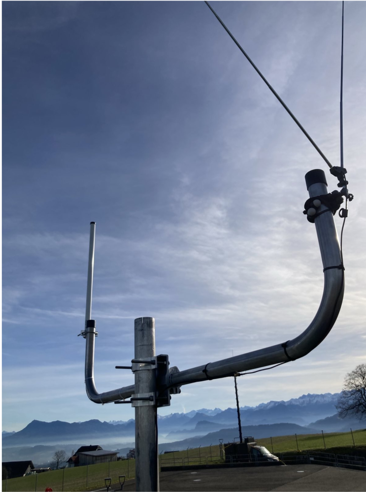
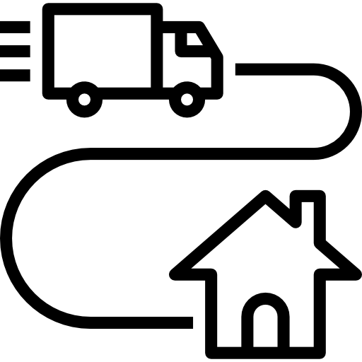
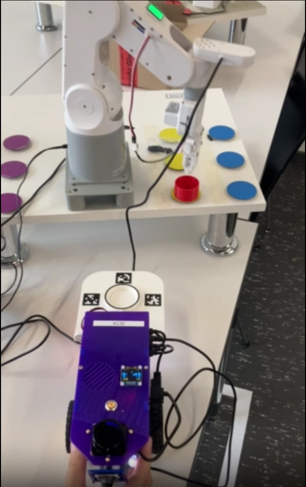

Human-Robot Interaction with Unitree Go1
ROS2 • Python • YOLOv8 • MediaPipe • Vosk • Docker
A comprehensive Human-Robot Interaction system for the Unitree Go1 quadruped robot developed in the HRI module at HSLU. The system enables natural multimodal interaction through hand gestures, voice commands, and visual person tracking. The robot can follow a designated person, respond to voice commands, and perform various poses using an advanced ROS2 node architecture with sensor fusion.

Aircraft Tracking Infrastructure via Multilateration
Raspberry Pi • RTL-SDR • Docker • Python • VPS • Multilateration
A distributed multilateration (MLAT) infrastructure for aircraft localization across central Switzerland, developed for Armasuisse. The system tracks aircraft based on transponder signals independent of GPS data, using five geographically distributed receiver stations at Rotkreuz, Zürich, Thun, Emmen, and Payerne. Each station uses a Raspberry Pi 4 with RTL-SDR hardware and ADS-B antenna. Software components (readsb, mlat-client, tar1090) are containerized with Docker for scalable deployment. The MLAT server, running on a VPS, triangulates aircraft positions with a median accuracy of ~2km compared to GPS reference data. The system supports both cooperative ADS-B and uncooperative Mode-S signals, forwarding multilaterated positions to the OpenSky Network for visualization.

Microservice Filialbestellsystem
Java 21 • Microservices • RabbitMQ • Docker • MySQL • Hibernate
A distributed branch ordering system built with microservice architecture. The system manages customers, inventory, and orders through seven independent services communicating via RabbitMQ. Features include automated restocking, dunning checks, business logging, and JWT-based authentication. Each service has its own database ensuring high autonomy and scalability. Developed as part of the Software Design and Architecture (SWDA) module.

Robot-based Object Placement
Python • Computer Vision • AprilTag • Kinematics (FK/IK) • Elephant Robotics
A robotics project demonstrating precise placement of a plastic ring onto a landing platform using AprilTag markers. The system uses an Elephant Robotics MyPalletizer 260 arm and combines computer vision, forward/inverse kinematics, and closed-loop control. Control operates via a coordinate system with origin at the robot base, using real-time camera positioning for mm-accurate object placement.

Data Mining SRF
Python • Data Analysis • Web Scraping • Docker
This is my first data mining project where I extracted data from www.srf.ch, a Swiss news site, and then systematically analyzed the data. I was interested in publication time of articles, attention on certain subjects over time, releasing frequency and release timing of certain authors. Also I was interested in possible biases of the publisher concerning specific subjects. I gathered the relevant HTML files with a script on my Raspberry Pi which reached out once per day. This was inspired by David Kriesel's "Reversing Spiegel-Online".